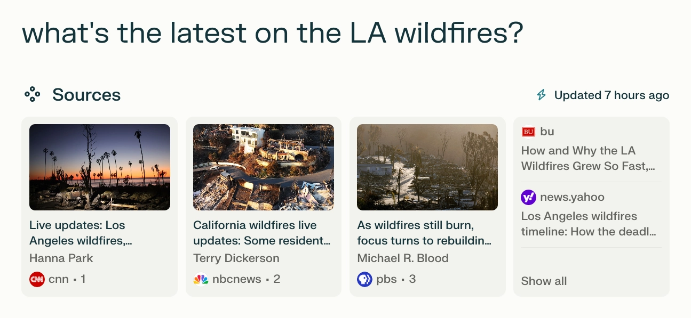

Hi. üëã We're Lunal. We write software that pays websites when their content is used by LLMs.
The Peril
The web is crumbling.
Right now? Quietly. Soon? Violently.
Today websites are destinations. Tomorrow they're mines. Their data is scraped, repackaged, and served directly to you by your favorite LLM provider: ChatGPT, Perplexity, Google, etc. Why browse the web when your LLM delivers better answers faster?
The genie’s out of the bottle: ChatGPT is the second fastest-growing product. Ever.1 Users aren’t going back.
But this is a silent, looming death blow to the web. No browsing means no ad impressions. No ads means no revenue. And no revenue means no web.
But here's the paradox: without the web, AI starves. LLMs need fresh content to stay relevant, but their very use cannibalizes content creation. LLM adoption erodes the web. And in turn? The LLMs themselves.
We need a new, sustainable model for AI and the web. The whole web. Incumbents like Google and Reddit are inking one-off, private deals. But that doesn't scale. We need a model that scales. For everyone.
So we built one.
We call it Lunal.
A New Way
LLMs and AI-powered search don't have to shatter the web. They can save it. How? By flowing money back to the websites whose content they serve.
That's Lunal. Here's how it works:
- You use your favorite LLM, e.g. ChatGPT or Perplexity.
- It generates an answer with content from websites.
- Lunal calculates the value of each website's contributions.
- Lunal facilitates payments from the LLM to each website for its contributions.
It's like an affiliate network. But for AI answers. LLMs make money with ads and/or subscriptions (e.g. ChatGPT Plus) and share a fair portion of this income with the websites that provide it content.
Simple. Fair. Transparent.
Let's walk through an example.
-
Perplexity integrates Lunal's SDK.
<script src='https://lunal.ai/sdk.js'></script> - You ask Perplexity: "what's the latest on the LA wildfires?"
- Perplexity searches the web, gathers data from multiple websites, and generates an answer for you. 
-
Lunal’s SDK analyzes Perplexity's answer and determines:
- Which websites contributed data, e.g. cnn.com and nbcnews.com.
- How much content each website, e.g. cnn.com and nbcnews.com, contributed to the answer.
-
Then, like an affiliate network calculates commissions, Lunal
calculates each contribution's value. E.g. $0.05 to cnn.com
and $0.05 to nbcnews.com.
(For context, Google makes ~$0.30 in revenue per search in the US.1) - Lunal charges Perplexity $0.10.
- Lunal pays cnn.com $0.05 and nbcnews.com $0.05.
Lunal's business model is simple and familiar: take a small cut of transactions.
No personal data is tracked. Privacy first.
Users get fast, accurate answers. LLMs get content. Websites get paid.
Everyone wins.
Deliverance
The web has responded. Lawsuits are piling up:
- The New York Times sues OpenAI and Microsoft.
- The Wall Street Journal and The New York Post sue Perplexity.
- The Canadian Press, Torstar, Globe and Mail, Postmedia, and CBC/Radio-Canada sue OpenAI.
This isn’t a trend. It’s a collision course.
But this is beyond legal compliance and settlements. It’s about survival. Content isn't free.
The web has started to fight back.1 Like a host fighting a parasite. 85% of Cloudflare-protected websites now block AI crawlers.1
{kind=link}
But blocking crawlers hasn’t halted LLM adoption. And it won't.
AI doesn’t need to eat the web to succeed. Instead, Lunal offers a sustainable, fair model for the web in the age of AI.
And we're launching. Publicly. Soon.
- Are you building an AI product that uses web content? Reach out to integrate our SDK and engender content creation.
- Run a website? Get in touch to get paid when LLMs use your content.